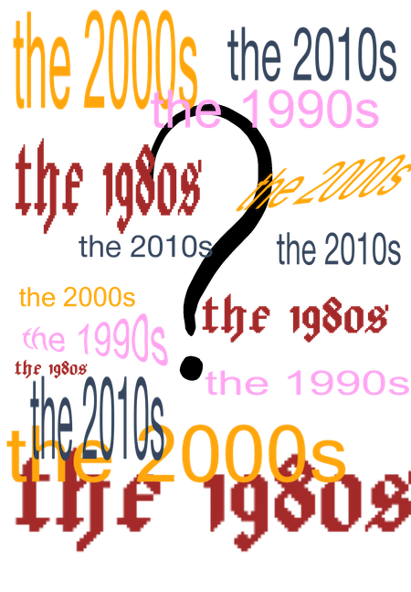

through the decades
home
the eighties
the nineties
the two thousands
the twenty tens

Which decade should I learn about first?
****************************a non-comprehensive list of additional sources****************************
the eighties
Books to read
Lit Hub: The 10 Books That Defined the 80s
NTS Radio mixes featuring music from the 80s
Dancing Through the !980s
Scene In Between
Iconic Live Sets
Depeche Mode Live (1996)
Siouxsie and the Banshees live (1981)
the nineties
Books from the 90s or set during the 90s
Book List Queen: Books about the 1990s
Book Riot: Books set in the 1990s
NTS Radio Mixes featuring fun 90s music
The NTS Guide to Late 90s Mid-Western Space & Post Rock
The NTS Guide to 90s Denver Rap
Tim Reaper: Remixes of the 90s
The NTS Guide to Mexican Discoteca
Iconic Live Sets
Eric Clapton, MTV Unplugged (1992)
Nirvana, MTV Unplugged (1994)
the two thousands
Books from the 2000s or set during the 2000s
Penguin Random House: 22 Bestsellers Published in the 2000s
Buzzfeed: Books from our childhood
Lit Hub: A Century of Reading: 10 Books That Defined the 2000s
NTS Radio Mixes featuring fun 2000s music
Reimagining Country with Jamal Khadar and Julian Obubo
Loraine James: Japan 2000s R&B Special
Axcess Amnesia: Digital Hardcore Special (DHR era) 1994-2000s
Iconic Live Sets
Lauryn Hill, MTV Unplugged (2001)
Ne-Yo performing So Sick on MTV Unplugged (2007)
Amy Winehouse (2008)
the twenty tens
Books from the 2010s or set during the 2010s
Lit Hub: The 10 Books That Have Defined the 2010s So Far
10 Sci-Fi and Fantasy Must-Reads from the 2010s
Buzzfeed: Best Books of the Decade
NTS Radio Mixes featuring fun 2010s music
The NTS Guide to 2010s Underground RnB
The NTS Guide to Plugg Music
Iconic Live Sets
Florence and the Machine Unplugged
B.o.B. performing Airplanes live on MTV